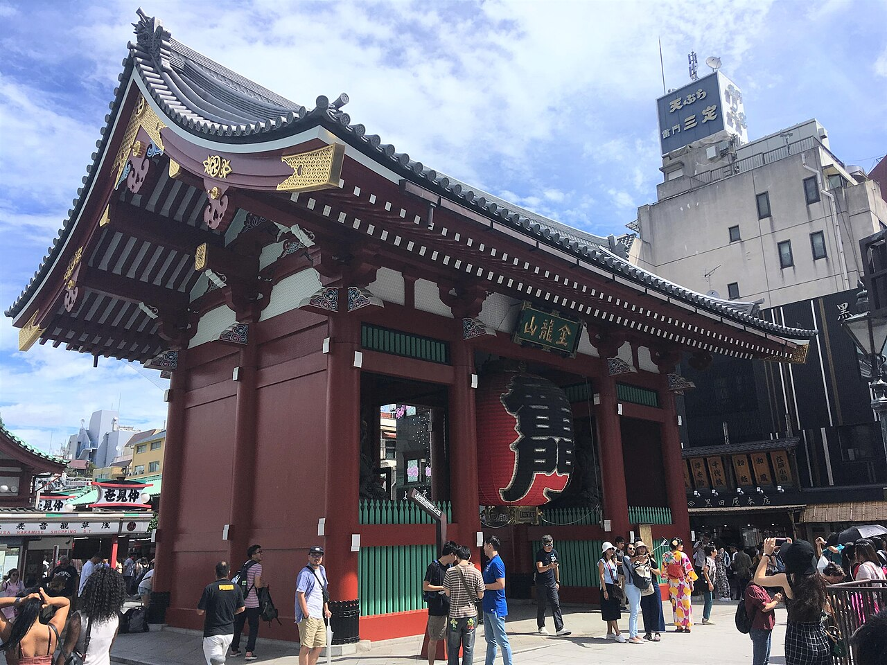
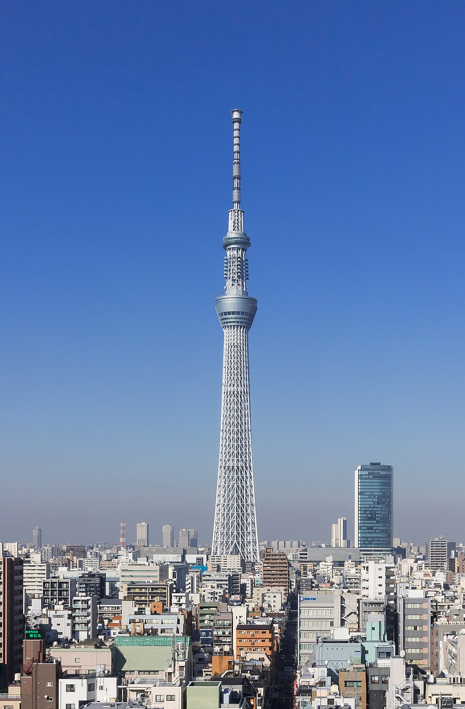
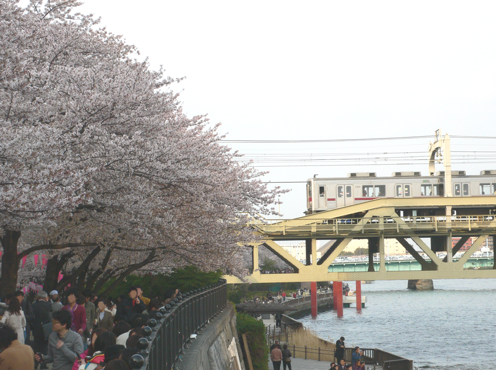

我的行程 · 日本
東京，慢慢玩。
Tokyo 5 Days
10.12 — 10.16
5 天 4 夜 · 15 個景點
路線示意・非導航© OpenStreetMap contributors
示範行程 · 流量依使用行為估算，不是地區實測。
東京 5 日 · 出國準備
網路，也幫你想好了。
買多少、付多少、得到什麼，一次看懂。
你的上網習慣
Mock5 天預估用量5–8 GB
照片上傳、導航與社群；住宿有 Wi-Fi。
依你的習慣推薦日本 · 5 日
每日 2GB 高速上網
共 10GB 高速額度 · 每日重置
模擬一般價NT$299
含回憶創作 1 次✓ 先看風格，回國留下旅行回憶
✓ 可自由共編，購買才計入組隊福利
裝置須支援 eSIM 且無電信鎖；相容性與方案條款需在正式結帳前確認。本頁不會付款。
沒用完的網路，能變成下一次的旅金？
「趣Chip」先以可結算的總量型方案探索。每日重置的方案不直接套用。
可獲趣Chip20
Mock：每剩 1GB 換 10 點，上限 30 點；限下次 eSIM 訂單滿 NT$299 抵用，30 天有效，非現金。需供應商結算資料與成本驗證。
旅行結束，回憶才剛開始同一個東京，
同一個東京，
你的那一種風格。
先看喜不喜歡，再把自己的旅行放進來。
TOKYO / 2026


把東京，
留在這一頁。
留在這一頁。
淺草寺・隅田公園・東京晴空塔
風格版型示意 · 非 AI 生成成果你的回憶創作
互動模擬本趟 eSIM 購買後，解鎖 1 次創作。
照片僅在此瀏覽器預覽，不上傳、不保存到發布包。
正式版會串接生成式 AI；這裡示範選風格與資格流程。
給組員的討論版
從使用者，到商業價值。
分開看 TA、故事與效益，每次聚焦一件事。